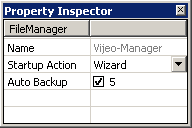
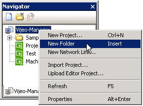
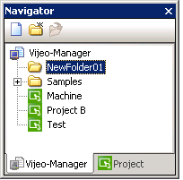
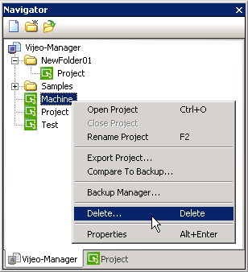

|
|
|
|
|
|
|
|
The Vijeo-Manager tab lists all the projects set up on your PC. Double-click a project to open the project, or select the Vijeo-Manager icon to display the Vijeo-Manager properties.
This section describes Vijeo-Managers properties and how to organize the project folder in the Vijeo-Manager tab and how to delete an unused project.
You can specify the Vijeo-Manager settings to define how the application behaves at startup and set the automatic project backup option.

The following table lists the Vijeo-Manager properties.
|
Property |
Description |
|
Name |
Contains Vijeo-Manager. This field is read only. |
|
Startup Action |
Allows you to choose the action that Vijeo-Designer will take at startup. Select either:
|
|
Auto Backup |
Select the Auto Backup checkbox to enable automatic project backup. Then specify the number of backup files to be created, from a range of 1 to 99. Project backup files are automatically created when the project properly closes. After the number of backup files to be created has been reached, the newer backup files replace the oldest backup files. Backup files are named AutoBackupXXX, where XXX is a three-digit number starting at 001. They are stored on your PC at: C:\documents and settings\all users\documents\Vijeo-Designer\Vijeo-Manager\<ProjectName>.
|
In the Vijeo-Manager tab of the Navigator window, right-click Vijeo-Manager, and then click New Folder.

A new folder is created. Rename the folder, if necessary.

Create a new project in this folder by right-clicking the new folder and selecting New Project. You can also drag and drop other folders into the new folder.

Right-click the project that you want to delete from the Vijeo-Manager tab in the Navigator window, and select Delete.

The project is deleted.

You cannot delete a project that is currently open. Close the project before you delete it. For more information, see Section 4.11.3, Closing a Project.